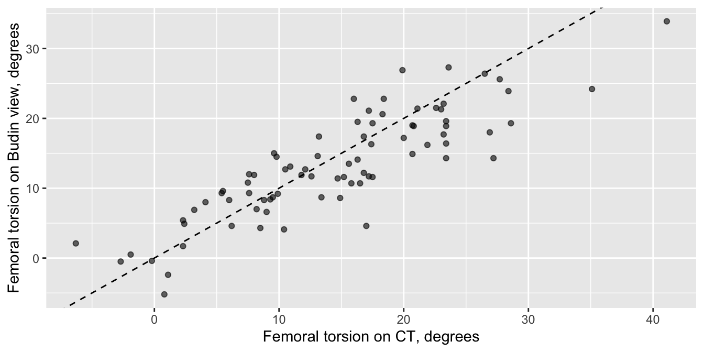
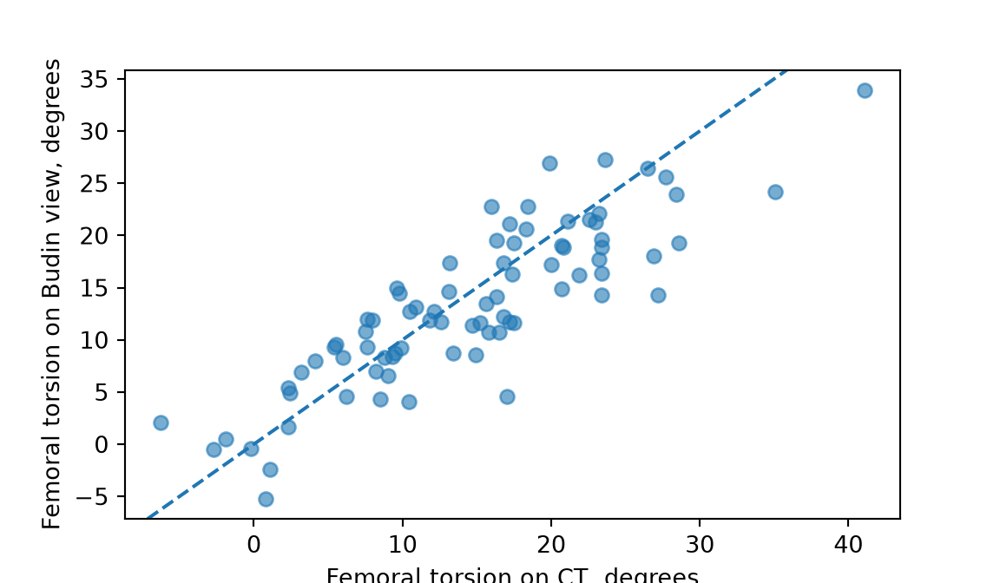

10 · Quantifier l’association entre deux variables
Corrélation de Pearson, corrélation de Spearman et coefficients de contingence : à quel point deux variables vont ensemble.
Deux choses mesurées chez les mêmes patients : la torsion fémorale au scanner et sur l’incidence de Budin modifiée, l’amélioration des PROM (mesures des résultats rapportés par le patient) et la satisfaction, la classe ASA et l’hypertension. Les tests de cette page ne comparent pas des groupes. Ils donnent un seul nombre pour dire à quel point les deux vont ensemble, avec un IC à 95 % (intervalle de confiance). Si vous voulez prédire l’une à partir de l’autre, utilisez la régression (page 11).
Note💡 Comment fonctionne chaque section de cette page
Chaque section répond à une question sur l’un des jeux de données d’exercice (l’imagerie de la hanche pour Pearson, la cohorte de prothèses articulaires pour les autres). Son premier bloc de code charge les packages et les données : vous pouvez donc aller directement à la section dont vous avez besoin. Exécutez les blocs de cette section dans l’ordre, de haut en bas.
Pour garder le code court, les exemples de prothèses articulaires utilisent tous les cas, y compris les deux cas des patients opérés des deux côtés (80 patients dans toute la cohorte ; page 2 les compte). Dans une vraie étude, décidez comment les traiter (page 3) et dites ce que vous avez fait.
Corrélation de Pearson
La question : à quel point la torsion fémorale mesurée sur l’incidence de Budin modifiée suit-elle celle mesurée au scanner ?
Quand l’utiliser
Deux mesures chez les mêmes patients, et vous voulez un seul nombre pour dire à quel point elles évoluent ensemble le long d’une droite.
Les deux sont à peu près normales, sans valeur atypique extrême, et le nuage de points ressemble à un nuage étiré le long d’une droite.
Si vous voulez prédire l’une à partir de l’autre, ou ajuster sur d’autres variables → régression linéaire.
Ce que fait vraiment le test
Le r de Pearson mesure à quel point les points suivent une droite.
Pour chaque patient, calculer à quelle distance chacune des deux mesures se trouve de sa propre moyenne, comptée en écarts-types. Une hanche située à 1 écart-type au-dessus de la moyenne au scanner vaut +1 au scanner.
Multiplier les deux résultats de chaque patient. Le produit est positif quand les deux mesures sont du même côté de leur moyenne (toutes deux au-dessus ou toutes deux en dessous), et négatif quand elles sont de côtés opposés.
Faire la moyenne des produits sur tous les patients (en divisant par n − 1). Cette moyenne est r. Quand une valeur élevée va avec une valeur élevée et une basse avec une basse, la plupart des produits sont positifs et r est proche de +1. Quand il n’y a pas de relation en ligne droite, les produits positifs et négatifs se compensent et r est proche de 0.
Le test demande si r est plus éloigné de 0 que le hasard ne l’expliquerait. Il convertit r en statistique de test, t = r × √(n − 2) ÷ √(1 − r²), puis t en valeur p.
Une fois le test exécuté, un encadré sous « Lire le résultat » recalcule r et t à la main.
library(tidyverse)imaging <-read_csv("data/hip_preservation_imaging.csv", show_col_types =FALSE) # une ligne par hancheggplot(imaging, aes(torsion_ct_deg, torsion_budin_deg)) +geom_point(alpha =0.6) +# des points transparents montrent où ils s'accumulentgeom_abline(linetype ="dashed") +# ligne pointillée : les deux méthodes donnent la même lecturelabs(x ="Femoral torsion on CT, degrees", y ="Femoral torsion on Budin view, degrees")

import pandas as pdimport matplotlib.pyplot as pltfrom scipy import statsimaging = pd.read_csv("data/hip_preservation_imaging.csv") # une ligne par hanchefig, ax = plt.subplots(figsize=(6, 3.5))ax.scatter(imaging["torsion_ct_deg"], imaging["torsion_budin_deg"], alpha=0.6) # des points transparents montrent où ils s'accumulentax.axline((0, 0), slope=1, linestyle="--") # ligne pointillée : les deux méthodes donnent la même lectureax.set_xlabel("Femoral torsion on CT, degrees")ax.set_ylabel("Femoral torsion on Budin view, degrees")plt.show()

Les points suivent une droite, sans valeur atypique extrême, mais une droite plus plate que la ligne pointillée où les deux méthodes donneraient la même lecture : la lecture sur Budin est un peu au-dessus de celle du scanner aux faibles torsions, et au-dessous aux fortes torsions. (La torsion peut être négative : le fémur est alors en rétroversion.)
cor (R) ou statistic (Python) : le r = 0.86 de Pearson. Il va de −1 (une droite parfaitement descendante), en passant par 0 (aucune relation en ligne droite), jusqu’à +1 (une droite parfaitement montante).
t = 14.7, df = 78 : la statistique de test, avec ses degrés de liberté (ddl) : 80 hanches moins 2. Python ne l’affiche pas.
p < 0.001 (R affiche p-value < 2.2e-16, la plus petite valeur qu’il montre ; Python affiche 3.0576926692219362e-24. Les deux sont la notation scientifique de nombres très inférieurs à 0.001) : une corrélation aussi forte serait très improbable si la torsion au scanner et sur l’incidence de Budin n’étaient pas liées.
ct_sd_units <- (imaging$torsion_ct_deg -mean(imaging$torsion_ct_deg)) /sd(imaging$torsion_ct_deg) # étape 1 : chaque valeur du scanner, en écarts-types par rapport à sa moyennebudin_sd_units <- (imaging$torsion_budin_deg -mean(imaging$torsion_budin_deg)) /sd(imaging$torsion_budin_deg) # ... et chaque valeur de Budinr_by_hand <-sum(ct_sd_units * budin_sd_units) / (80-1) # étapes 2 et 3 : multiplier, additionner, diviser par n − 1 (80 hanches)r_by_hand
[1] 0.8576899
r_by_hand *sqrt(80-2) /sqrt(1- r_by_hand^2) # étape 4 : t
[1] 14.73238
import numpy as npct_sd_units = (imaging["torsion_ct_deg"] - imaging["torsion_ct_deg"].mean()) / imaging["torsion_ct_deg"].std() # étape 1 : chaque valeur du scanner, en écarts-types par rapport à sa moyennebudin_sd_units = (imaging["torsion_budin_deg"] - imaging["torsion_budin_deg"].mean()) / imaging["torsion_budin_deg"].std() # ... et chaque valeur de Budinr_by_hand = (ct_sd_units * budin_sd_units).sum() / (80-1) # étapes 2 et 3 : multiplier, additionner, diviser par n − 1 (80 hanches)print(r_by_hand)
Le r calculé à la main vaut 0.86 et le t calculé à la main 14.7 : ce sont cor et t dans la sortie de R. Python affiche r sous statistic et n’affiche pas t.
Taille d’effet et IC à 95 %
r est la taille d’effet : r = 0.86 (IC à 95 % de 0.79 à 0.91). Comme repère approximatif, 0.1 est petit, 0.3 moyen et 0.5 grand. Son carré donne la part de la variation de la torsion sur Budin qui va avec la torsion au scanner : r² = 0.74, soit environ les trois quarts.
Rédiger les résultats
Methods: The association between femoral torsion on CT and on the modified Budin view was measured with Pearson’s correlation coefficient (r).
Results: The correlation between femoral torsion on CT and on the modified Budin view was r = 0.86 (Pearson; 95% CI 0.79 to 0.91; p < 0.001; n = 80 hips).
Avertissement⚠️ Attention : r ne voit que les droites, n’est pas une cause et n’est pas une concordance
Une relation qui monte puis redescend peut avoir un r proche de 0, et une seule valeur atypique peut créer ou masquer une corrélation : regardez donc toujours d’abord le nuage de points. De plus, une corrélation ne dit pas laquelle des deux variables cause l’autre, ni si un troisième facteur (âge, sexe) influence les deux. Pour ajuster sur d’autres variables, utilisez la régression multiple.
Un r élevé n’est pas une concordance. Deux méthodes peuvent monter et descendre ensemble tout en lisant des angles différents. Ici r = 0.86, et pourtant la lecture sur Budin s’écartait de celle du scanner jusqu’à 12.9°, et l’on s’attend à ce que 95 % des différences se situent de −10.2° à 7.8° (la différence moyenne ± 1.96 écart-type). Même ces limites cachent une tendance : chez les 8 hanches avec 25° ou plus au scanner, la lecture sur Budin était en moyenne inférieure de 7.0°. Le code ci-dessous calcule ces nombres. Pour savoir si une méthode peut remplacer l’autre, utilisez les limites de Bland-Altman.
difference <- imaging$torsion_budin_deg - imaging$torsion_ct_deg # Budin moins scanner, une valeur par hanchemax(abs(difference)) # le plus grand écart entre les deux méthodes
[1] 12.9
mean(difference) +c(-1.96, 1.96) *sd(difference) # où l'on attend 95 % des différences
[1] -10.193064 7.810564
high_ct <- imaging$torsion_ct_deg >=25# hanches avec 25° ou plus au scannersum(high_ct) # combien
[1] 8
mean(difference[high_ct]) # leur différence moyenne
[1] -6.9875
difference = imaging["torsion_budin_deg"] - imaging["torsion_ct_deg"] # Budin moins scanner, une valeur par hancheprint(difference.abs().max()) # le plus grand écart entre les deux méthodes
12.899999999999999
print(difference.mean() -1.96* difference.std(), difference.mean() +1.96* difference.std()) # où l'on attend 95 % des différences
-10.193064369997792 7.810564369997792
high_ct = imaging["torsion_ct_deg"] >=25# hanches avec 25° ou plus au scannerprint(high_ct.sum(), difference[high_ct].mean()) # combien, et leur différence moyenne
8 -6.987500000000001
Corrélation de Spearman
La question : les patients dont le HOOS JR (score de la hanche pour prothèse articulaire, version abrégée) ou le KOOS JR (score du genou pour prothèse articulaire, version abrégée) s’est le plus amélioré entre avant l’opération et 1 an sont-ils aussi plus satisfaits ?
Quand l’utiliser
Deux variables chez les mêmes patients, dont au moins une est ordinale (satisfaction de 1 à 5), asymétrique ou comporte des valeurs atypiques.
La relation va dans un seul sens (toujours vers le haut, ou toujours vers le bas), sans être forcément une droite. Le ρ (rho) de Spearman est le r de Pearson calculé sur les rangs.
Si les deux sont à peu près normales et que la relation est une droite → corrélation de Pearson.
Ce que fait vraiment le test
Le ρ de Spearman est le r de Pearson à une différence près : il est calculé sur les rangs et non sur les valeurs elles-mêmes.
Classer les patients selon la première variable, de la valeur la plus basse à la plus élevée. Les valeurs ex æquo partagent la moyenne de leurs rangs.
Faire de même, séparément, pour la seconde variable.
Calculer le r de Pearson entre les deux séries de rangs. Le résultat est ρ : proche de +1 quand les patients bien classés pour une variable le sont aussi pour l’autre, proche de −1 quand les deux classements vont en sens opposé, et proche de 0 quand ils n’ont rien à voir l’un avec l’autre.
Le test demande si ρ est plus éloigné de 0 que le hasard ne l’expliquerait, et donne une valeur p.
Comme seul l’ordre compte, une seule valeur atypique ne peut pas dominer le résultat, et une relation qui monte le long d’une courbe peut tout de même donner un ρ proche de 1. Une fois le test exécuté, un encadré sous « Lire le résultat » recalcule ρ à la main.
library(tidyverse)cohort <-read_csv("data/cohort.csv", show_col_types =FALSE)proms <-read_csv("data/proms_long.csv", show_col_types =FALSE)change <- proms |>filter(visit %in%c("preop", "1yr")) |>select(case_id, visit, prom_score) |>pivot_wider(names_from = visit, values_from = prom_score) |># une ligne par cas : preop et 1yr côte à côtemutate(improvement =`1yr`- preop) |>inner_join(select(cohort, case_id, satisfaction_1yr), by ="case_id") |>filter(!is.na(improvement), !is.na(satisfaction_1yr)) # les deux réponses sont nécessairesnrow(change) # interventions avec les deux scores et une réponse de satisfaction
[1] 404
ggplot(change, aes(factor(satisfaction_1yr), improvement)) +geom_boxplot() +labs(x ="Satisfaction at 1 year (1 = very dissatisfied, 5 = very satisfied)", y ="Improvement, points")
import numpy as npimport pandas as pdimport matplotlib.pyplot as pltfrom scipy import statscohort = pd.read_csv("data/cohort.csv")proms = pd.read_csv("data/proms_long.csv")wide = proms[proms["visit"].isin(["preop", "1yr"])].pivot(index="case_id", columns="visit", values="prom_score")wide["improvement"] = wide["1yr"] - wide["preop"] # une ligne par cas : preop et 1yr côte à côtechange = wide.join(cohort.set_index("case_id")["satisfaction_1yr"]).dropna(subset=["improvement", "satisfaction_1yr"])print(len(change)) # interventions avec les deux scores et une réponse de satisfaction
404
levels = [1, 2, 3, 4, 5]fig, ax = plt.subplots(figsize=(6, 3))parts = ax.boxplot([change.loc[change["satisfaction_1yr"] == level, "improvement"] for level in levels], tick_labels=levels)ax.set_xlabel("Satisfaction at 1 year (1 = very dissatisfied, 5 = very satisfied)")ax.set_ylabel("Improvement, points")plt.show()
404 interventions ont un score préopératoire et un score à 1 an, ainsi qu’une réponse de satisfaction (le premier nombre affiché). L’amélioration médiane augmente à chaque niveau de satisfaction, de 25.4 points chez les 14 patients très insatisfaits à 43.8 chez les 198 très satisfaits. La satisfaction n’a que cinq valeurs : il y a donc beaucoup de valeurs ex æquo.
satisfaction_corr <-cor.test(change$improvement, change$satisfaction_1yr,method ="spearman", exact =FALSE) # valeurs ex æquo : pas de valeur p exactesatisfaction_corr
Spearman's rank correlation rho
data: change$improvement and change$satisfaction_1yr
S = 6764534, p-value = 1.111e-15
alternative hypothesis: true rho is not equal to 0
sample estimates:
rho
0.3844721
rho (R) ou statistic (Python) : ρ = 0.38. Comme r, il va de −1 à +1 ; ici, il indique que les patients dont l’amélioration est plus grande ont tendance à donner des scores de satisfaction plus élevés.
S = 6764534 (R seulement) : la statistique de test, construite à partir des écarts entre les deux classements. Vous n’avez pas besoin de la rapporter.
p < 0.001 (R affiche 1.111e-15, Python le même nombre avec plus de chiffres ; c’est la notation scientifique : avec e-15, le point décimal recule de 15 rangs vers la gauche) : une corrélation aussi forte serait très improbable si l’amélioration et la satisfaction n’étaient pas liées.
improvement_ranks <-rank(change$improvement) # étape 1 : classer les améliorations ; les ex æquo partagent le rang moyensatisfaction_ranks <-rank(change$satisfaction_1yr) # étape 2 : classer les réponses de satisfactiontapply(satisfaction_ranks, change$satisfaction_1yr, unique) # le rang que reçoit chaque niveau de satisfaction
1 2 3 4 5
7.5 23.5 54.0 141.0 305.5
cor(improvement_ranks, satisfaction_ranks) # étape 3 : le r de Pearson entre les deux séries de rangs
[1] 0.3844721
improvement_ranks = change["improvement"].rank() # étape 1 : classer les améliorations ; les ex æquo partagent le rang moyensatisfaction_ranks = change["satisfaction_1yr"].rank() # étape 2 : classer les réponses de satisfactionprint(satisfaction_ranks.groupby(change["satisfaction_1yr"]).first()) # le rang que reçoit chaque niveau de satisfaction
print(stats.pearsonr(improvement_ranks, satisfaction_ranks).statistic) # étape 3 : le r de Pearson entre les deux séries de rangs
0.38447211702320483
La satisfaction n’a que cinq valeurs : ses rangs comportent donc beaucoup d’ex æquo. Les 14 patients très insatisfaits se partagent les rangs 1 à 14 et reçoivent chacun leur moyenne, 7.5 ; les 198 très satisfaits reçoivent chacun 305.5. Le r de Pearson entre les deux séries de rangs vaut 0.38, le ρ que les deux programmes ont affiché.
Taille d’effet et IC à 95 %
ρ est la taille d’effet. Ni cor.test() ni scipy n’en donnent l’IC à 95 %. R utilise donc DescTools, et Python la formule qui le sous-tend (transformation z de Fisher).
ρ = 0.38 (IC à 95 % de 0.30 à 0.46) : une association modérée, avec le même repère approximatif que pour r.
Rédiger les résultats
Methods: The association between improvement in HOOS JR or KOOS JR from before surgery to 1 year and satisfaction at 1 year was measured with Spearman’s rank correlation coefficient (ρ).
Results: Among 404 procedures with both scores and a satisfaction answer, the correlation between the change in HOOS JR or KOOS JR and satisfaction was ρ = 0.38 (Spearman; 95% CI 0.30 to 0.46; p < 0.001).
Avertissement⚠️ Attention : deux instruments dans un seul nombre
Les patients avec une prothèse de hanche répondent au HOOS JR, et ceux avec une prothèse de genou au KOOS JR. Les deux vont de 0 à 100, mais rien ne garantit qu’un point de l’un signifie la même chose qu’un point de l’autre. Les regrouper est acceptable pour un premier coup d’œil ; dans un article, analysez séparément les hanches et les genoux, ou expliquez pourquoi vous les avez regroupés.
Astuce🔀 R ou Python : valeurs ex æquo et IC
Avec moins de 1290 patients, le cor.test() de R essaie de calculer une valeur p exacte. En présence de valeurs ex æquo, il n’y arrive pas : il affiche un avertissement et revient à l’approximation habituelle, celle que scipy utilise toujours. exact = FALSE demande directement l’approximation, sans avertissement.
Ni l’un ni l’autre ne donne d’IC pour ρ. Le SpearmanRho() de DescTools et la formule Python utilisent la même méthode : le z de Fisher avec une erreur standard de 1/√(n − 3).
Coefficients de contingence
La question : quelle est la force du lien entre la classe ASA et l’hypertension ?
Quand l’utiliser
Deux variables catégorielles chez les mêmes patients. Le test du khi-deux (page 8) demande si elles sont liées, tout court ; un coefficient de contingence dit à quel point.
Phi (φ) sert pour les tableaux 2 × 2. Le V de Cramér convient à un tableau de n’importe quelle taille et égale φ (sans son signe) sur un tableau 2 × 2. Les deux vont de 0 (aucun lien) à 1 (chaque catégorie de l’une prédit exactement l’autre).
Le coefficient de contingence de Pearson (C) est plus ancien. Son maximum est inférieur à 1 et dépend de la taille du tableau (il vaut √((k − 1) ÷ k), où k est le plus petit des deux nombres, lignes ou colonnes : √(1 ÷ 2) = 0.71 pour un tableau à deux colonnes), ce qui le rend difficile à lire : préférez donc V.
La valeur p du khi-deux exige que chaque effectif attendu soit d’au moins 5.
Ce que fait vraiment le test
Un coefficient de contingence transforme la statistique du khi-deux en un nombre entre 0 et 1 qui dit quelle est la force du lien.
Exécuter le test du khi-deux. Il compare le tableau observé au tableau attendu si les deux variables n’étaient pas liées, et résume l’écart entre les deux par χ².
χ² augmente avec la force du lien, mais aussi avec le nombre de patients : si l’on double chaque effectif du tableau, χ² double, alors que le lien n’est pas plus fort.
Le V de Cramér retire l’effet de la taille de l’échantillon : V = √(χ² ÷ (n × (k − 1))), où n est le nombre de patients et k le plus petit des deux nombres, lignes ou colonnes.
Le C de Pearson utilise une formule un peu différente, C = √(χ² ÷ (χ² + n)), qui ne peut jamais atteindre 1.
Une fois le test exécuté, un encadré sous « Lire le résultat » calcule V et C à la main.
library(tidyverse)cohort <-read_csv("data/cohort.csv", show_col_types =FALSE)asa_hypertension <-table(asa = cohort$asa, hypertension = cohort$hypertension) # 1 = hypertenduaddmargins(asa_hypertension) # le tableau, avec les totaux des lignes et des colonnes
import pandas as pdfrom scipy import statscohort = pd.read_csv("data/cohort.csv")asa_hypertension = pd.crosstab(cohort["asa"], cohort["hypertension"]) # 1 = hypertenduprint(pd.crosstab(cohort["asa"], cohort["hypertension"], margins=True)) # le tableau, avec les totaux des lignes et des colonnes
L’hypertension devient plus fréquente à chaque classe ASA : de 12 patients sur 36 (33.3 %) en ASA 1 à 16 sur 18 (88.9 %) en ASA 4. Les totaux se trouvent dans la ligne et la colonne Sum dans R, All en Python.
p < 0.001 (R affiche 3.702e-05, la notation scientifique de 0.000037 ; c’est le troisième nombre de la première ligne de Python) : un lien aussi fort serait très improbable si l’hypertension était aussi fréquente dans chaque classe ASA.
Effectifs attendus : ce que contiendrait chaque cellule si la classe ASA et l’hypertension n’étaient pas liées. Le plus petit est 7.83, dans la dernière ligne, première colonne (ASA 4 sans hypertension) : 18 interventions en ASA 4 × 261 sans hypertension ÷ 600. Tous les effectifs attendus sont d’au moins 5, la valeur p est donc fiable.
chi_square <-unname(asa_test$statistic)n_procedures <-sum(asa_hypertension) # les 600 interventionssqrt(chi_square / (n_procedures * (2-1))) # V de Cramér : le plus petit de 4 lignes et 2 colonnes est 2
[1] 0.1965592
sqrt(chi_square / (chi_square + n_procedures)) # C de Pearson
[1] 0.1928687
doubled <-unname(chisq.test(2* asa_hypertension)$statistic)c(doubled, sqrt(doubled / (2* n_procedures))) # étape 2 : avec chaque effectif doublé, le khi-deux double et V reste le même
[1] 46.3626066 0.1965592
import numpy as npchi_square = asa_test.statisticn_procedures = asa_hypertension.to_numpy().sum() # les 600 interventionsprint(np.sqrt(chi_square / (n_procedures * (2-1)))) # V de Cramér : le plus petit de 4 lignes et 2 colonnes est 2
0.19655916548428345
print(np.sqrt(chi_square / (chi_square + n_procedures))) # C de Pearson
0.19286868402903107
doubled = stats.chi2_contingency(2* asa_hypertension).statisticprint(doubled, np.sqrt(doubled / (2* n_procedures))) # étape 2 : avec chaque effectif doublé, le khi-deux double et V reste le même
46.36260664305351 0.19655916548428345
V = √(23.18 ÷ 600) = 0.20 et C = √(23.18 ÷ (23.18 + 600)) = 0.19, les nombres qu’affichent les fonctions de l’étape suivante. Doubler chaque effectif double χ², à 46.36, mais laisse V à 0.20 : V mesure la force du lien, pas la taille de l’étude.
effectsize::cramers_v(asa_hypertension, adjust =FALSE) # voir l'encadré R ou Python
Cramer's V | 95% CI
-------------------------
0.20 | [0.12, 1.00]
- One-sided CIs: upper bound fixed at [1.00].
effectsize::cramers_v(asa_hypertension) # le réglage par défaut, avec la correction pour petits échantillons : un peu plus petit
Cramer's V (adj.) | 95% CI
--------------------------------
0.18 | [0.10, 1.00]
- One-sided CIs: upper bound fixed at [1.00].
effectsize::pearsons_c(asa_hypertension)
Pearson's C | 95% CI
--------------------------
0.19 | [0.12, 1.00]
- One-sided CIs: upper bound fixed at [1.00].
print(stats.contingency.association(asa_hypertension, method="cramer")) # V de Cramér
0.19655916548428345
print(stats.contingency.association(asa_hypertension, method="pearson")) # C de Pearson
0.19286868402903107
V de Cramér = 0.20, une association de petite à moyenne (comme repère approximatif pour les tableaux à deux lignes ou deux colonnes, 0.1 est petit, 0.3 moyen et 0.5 grand). R affiche aussi un IC à 95 % unilatéral (0.12 à 1.00) : V ne peut pas être négatif, donc seule sa borne inférieure est informative. scipy ne calcule pas cet IC. Le deuxième résultat de R, intitulé Cramer's V (adj.), est expliqué dans l’encadré R ou Python. Le C de Pearson vaut ici 0.19, mais son plafond pour ce tableau est de 0.71, et non de 1 : le même nombre en dit donc plus qu’il n’y paraît, une raison de plus de rapporter V.
Rédiger les résultats
Methods: The association between ASA class and hypertension was tested with the chi-square test, with Cramér’s V as the effect size.
Results: Hypertension was present in 12 of 36 procedures (33.3%) in ASA 1 and 16 of 18 (88.9%) in ASA 4 (χ² = 23.2, df = 3, p < 0.001; Cramér’s V = 0.20, one-sided 95% CI 0.12 to 1.00).
Avertissement⚠️ Attention : V donne la force du lien, pas son profil
Mélanger les lignes du tableau ne change pas V : V ne peut donc pas dire que l’hypertension augmente régulièrement avec la classe ASA. Ce sont les pourcentages par ligne qui montrent le profil ; mettez-les dans vos Résultats. Si les catégories sont ordonnées et que vous attendez une tendance, un test de tendance peut être plus puissant que le test du khi-deux simple.
Astuce🔀 R ou Python : le V de Cramér existe en deux versions
cramers_v() et phi() d’effectsize appliquent par défaut une correction du biais des petits échantillons (ici V = 0.18, le résultat intitulé Cramer's V (adj.) dans l’onglet R), alors que association() de scipy n’en applique pas. adjust = FALSE la désactive pour que les deux concordent ; quelle que soit la version que vous utilisez, dites laquelle dans vos Méthodes. Sur un tableau 2 × 2, association(method="cramer") donne φ sans son signe.
Exercices
Les solutions utilisent les packages et les données chargés dans les sections ci-dessus : exécutez donc d’abord la page depuis le début.
1. Quelle est la force du lien entre les angles alpha mesurés sur les incidences de Dunn à 45° et de grenouille (frog-leg) ? Rapportez le r de Pearson avec son IC à 95 %.
Results: The correlation between the alpha angle on the Dunn 45° and frog-leg views was r = 0.93 (Pearson; 95% CI 0.89 to 0.95; p < 0.001; n = 80 hips).
Une corrélation forte, et pourtant l’incidence de Dunn donnait en moyenne 3.7° de plus (le dernier nombre affiché ; voir aussi la page 7) : r ne voit pas un décalage constant.
2. Un collègue demande si les patients plus âgés restent plus longtemps à l’hôpital. Quelle corrélation utiliseriez-vous, et que trouvez-vous ?
AstuceSolution
La durée de séjour est fortement asymétrique vers la droite, avec beaucoup de valeurs ex æquo (page 3) : corrélation de Spearman.
Spearman's rank correlation rho
data: cohort$los_days and cohort$age
S = 30777868, p-value = 0.0003644
alternative hypothesis: true rho is not equal to 0
sample estimates:
rho
0.1450568
Results: The correlation between age and length of stay was ρ = 0.15 (Spearman; 95% CI 0.07 to 0.22; p < 0.001).
Les patients plus âgés avaient tendance à rester un peu plus longtemps, mais l’association est faible.
3. L’apnée du sommeil est-elle plus fréquente chez les hommes que chez les femmes, et quelle est la force de son lien avec le sexe ? Rédigez la phrase de Résultats avec φ.
print(stats.contingency.association(apnea, method="cramer")) # phi sans son signe, sur un tableau 2 × 2
0.18175615899511754
Results: Sleep apnea was present in 69 of 257 men (26.8%) and 43 of 343 women (12.5%) (χ² = 19.8, df = 1, p < 0.001; φ = 0.18, one-sided 95% CI 0.11 to 1.00).
Chaque ligne du premier tableau donne son groupe : 300 + 43 = 343 femmes et 188 + 69 = 257 hommes. Le second tableau donne les pourcentages.